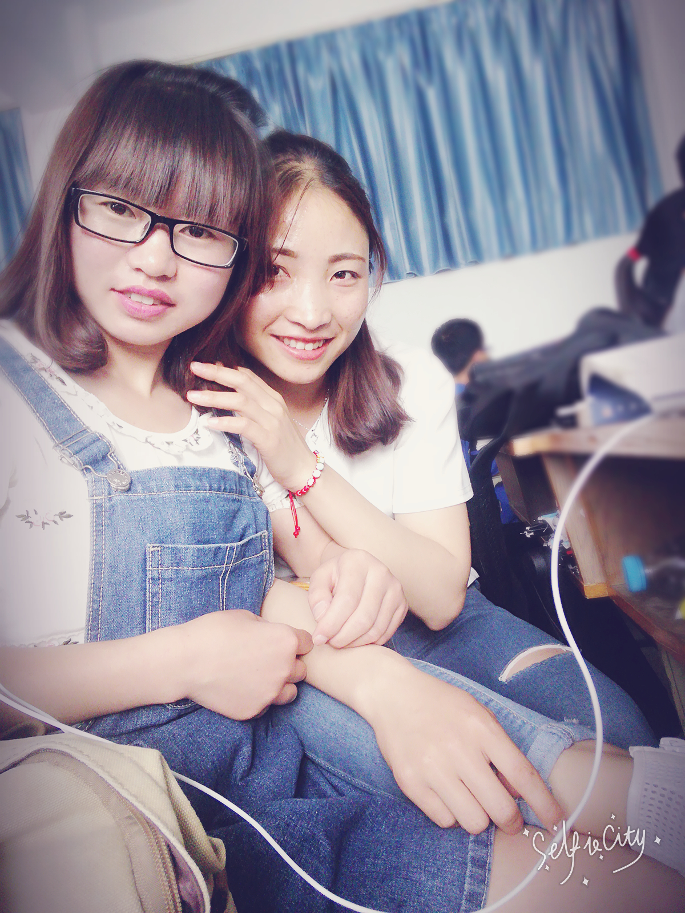

我叫姚翠霞，就读于天水师范学院。是一个活泼开朗，大方的女孩。我的专业是电子信息工程。 在大二的时候我选择进入我们学校的创新创业实验室开始学习web前端方面的知识。在经过二年的努力,我熟练地掌握了html+css,html5+css3,javascript,jquery,ajax等语言的使用， 也掌握了部分框架的使用，例如bootstrap， JqueryEasyUI等。我喜欢编写代码时的感觉，也因此两年的学习让我在学习的态度上多了些耐心。在调试bug的过程是漫长而辛苦的， 但是成功的那一刻的喜悦让我总觉得付出中终究不会白费。
html+css:
h5+css3:
Javascript:
Jquery:
JQEasyUI:
BootStrap:
Ajax+json:
Java:
ReactNative:
PhotoShop:
TimeLine
2014年9月，走进我生活了四年的大学，一切开始的没有那么的顺利，刚开始的不习惯，不知所措，迷茫，让刚开始的大学生活并没有以前想象中的美好;
2016年九月，比以前多了份成熟，也多了份责任。有人说越努力越幸运。所以我一直努力着，也幸运者，最终获取了全国励志奖学金，因此在前进的方向多了些鼓励;
2015年九月，经历了一年的迷茫，开始了自己的规划。考取了英语四级证书和计算机二级证和计算机三级证书。选择进入了创新创业实验室，找到了自己喜欢的专业方向。
2017年九月，转眼间，大学生涯已经接近尾声，我也要开始奔波于自己的求职生涯，虽然知道前面的路一定很艰辛，但是我一直会努力，一直坚持。


- 首页
- 关于大学
- 我的回忆
天水师范学院简介：
研究中心：甘肃省高校人文社会科学重点研究基地——天水师范学院陇右文化研究中心（省级重点）（历史文化学院）、陇东南民间文艺研究中心（省级重点）（文学与文化传播学院） ；
研究院：天水师范学院伏羲文化研究院（校级）；

2018年六月，挥手告别后，也许有的人已经是最后一次相见，最后一次拥抱，但是接下来的路还是要继续，千言万语最后只能是一句珍重，有缘再见。不哭泣，因为离别还会再见。 我也曾悔恨，我也曾鄙视曾经不努力的自己，但是我不曾后悔遇到那么一群带给我许多许多的好友。有他们，我的生活才多了更多的快乐。忘不了心情不好闷闷不乐静静待在床上不吃饭舍友一句一句的 劝说，当时真的很嫌烦，我真的想静静，过后去想想当时的我是那么的幸福。忘不了一起去游玩的任何地点。忘不了因某件事大哭一直在身边安慰的他们。忘不了的太多，但是我害怕分开后时间久了，彼此的生活发生了变化，彼此也就在 彼此的生命中淡淡的消失，但是我很幸运我遇到过。谢谢有你们。
史蒂芬·威廉·霍金（Stephen William Hawking，1942年1月8日），ALS患者，英国著名物理学家和宇宙学家。肌肉萎缩性侧索硬化症患者，全身瘫痪，不能发音。霍金的主要研究领域是宇宙论和黑洞，证明了广义相对论的奇性定理和黑洞面积定理， 提出了黑洞蒸发现象和无边界的霍金宇宙模型，在统一20世纪物理学的两大基础理论——爱因斯坦创立的相对论和普朗克创立的量子力学方面走出了重要一步。 while theres life,there is hope.
SayHello
对前端有兴趣的我希望得到一份前端工程师的工作。经过在学校实验室两年的历练我有着吃苦耐劳的精神，
和不怕艰难的决心;我一直相信只要用心，什么都可以做好。所以请您相信在工作中我一定会是一个很认真，积极主动的人。而且在
实验室和老师同学一起做项目的过程中，我也深有体会到一个团队合作的重要性，只有团结共进一个项目才能很好的完成。在项目中我也
学会了如何使用一些方便做项目的版本控制器，git和svn。我也在github上上传了自己的一些有意思的练习和部分项目。下面是我GitHub上的网页链接：
https://yaocuixia.github.io/